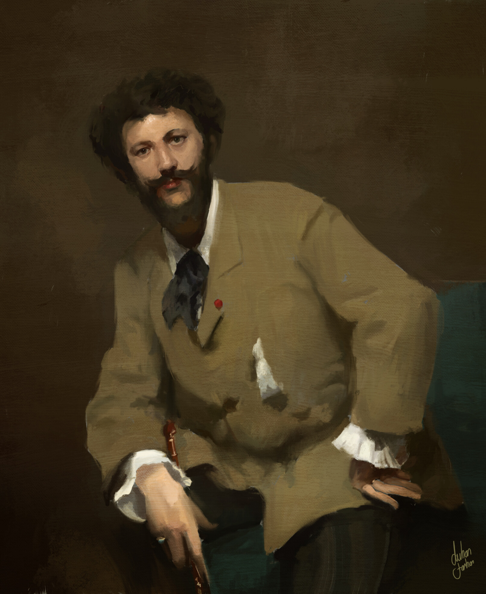

Biographical Information
An Expatriate Artist
John Singer Sargent was an American expatriate painter, watercolorist, and draughtsman. He was born in Florence, Italy in 1856 when a cholera outbreak stopped his parents' journey through Europe. His artistic studies led him through a brief period at L'Accademia di Belle Arti in Florence before travelling to Paris. In Paris, Sargent would study at both L'Ecole des Beaux-Arts and in the studio of Carolus-Duran (the portait of whom, painted by Sargent, is pictured below.)
Portait of Carolus-Duran by John Singer Sargent, 1879
Sargent and Writers
Sargent became a celebrated portaitist and both painted and sketched the portaits of many prominent artists, writers, and socialites, many of whom were Sargent's friends. Many of Sargent's portaits were provided interesting points of intersection between great visual art and great written art. Three of the literary luminaries Sargent painted or sketched (often multiple times) were the novelists Henry James and Robert Louis Stevenson and the poet William Butler Yeats. Examples can be found on the next page.